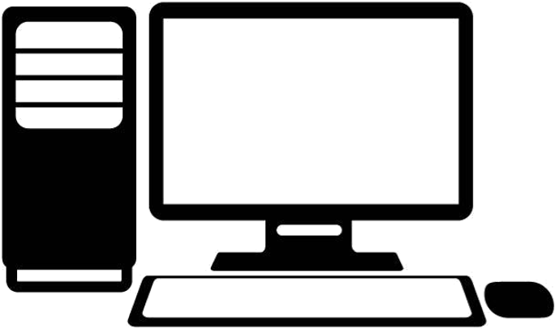

Jouer aux jeux vidéos comme World of Warcraft pour le plus connu
Je m'appelle Nicolas Panis, je viens de La Garde et j'ai étudié l'informatique
en commençant par un DUT en Génie Electrique qui m'a donné une vision globale des métiers
de l'électronique.
Puis je me suis spécialisé pendant 1 an avec une licence pro. dans la
programmation de systèmes embarqués.